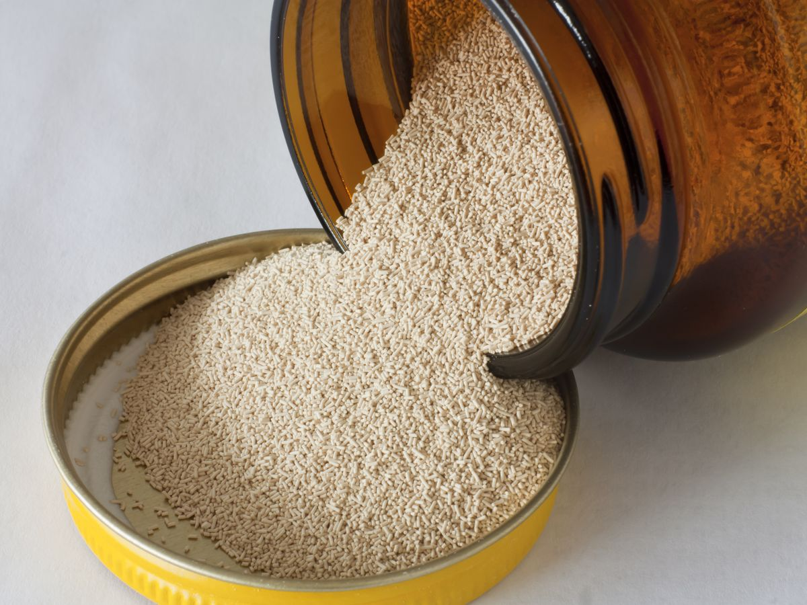
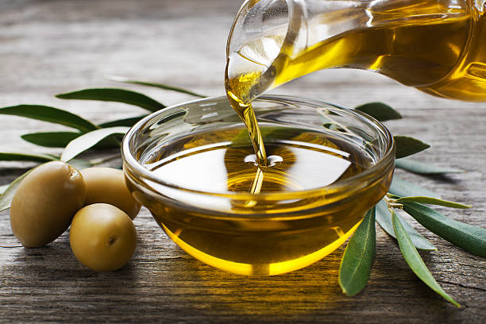
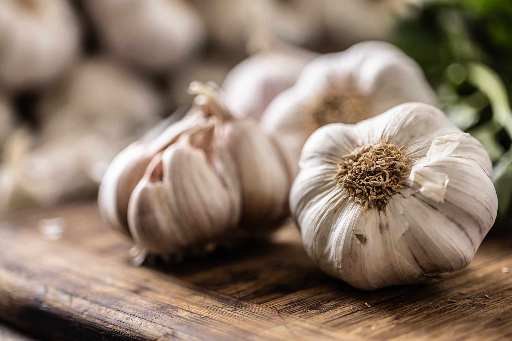
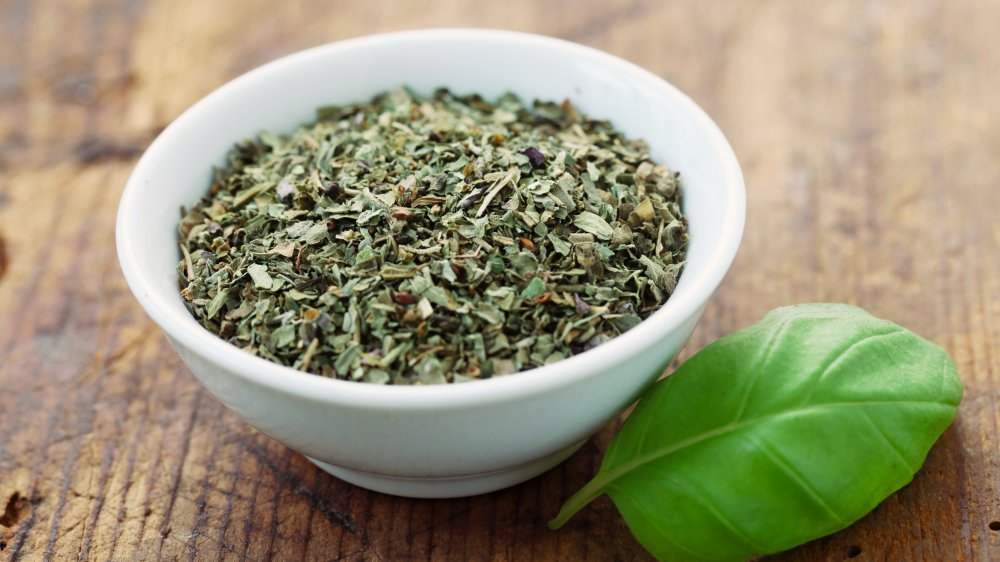
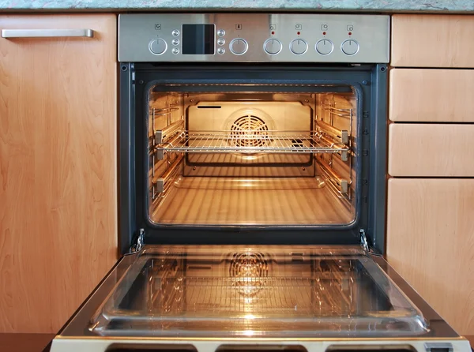
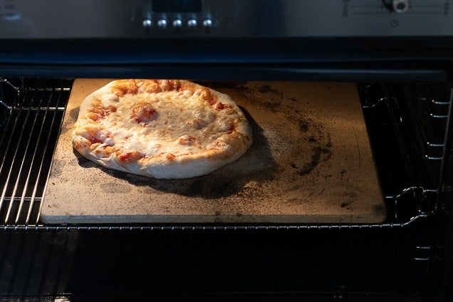

Dough Preparation

2 cups of flour

1 cup warm water
1 tsp yeast
1 tsp salt
2 tbsp olive oil
- Combine the flour, yeast, and salt in a large mixing bowl.
- Gradually add the warm water and olive oil, and mix until a dough forms.
- Knead the dough on a floured surface until smooth, about 10 minutes.
- Let the dough rise in a warm place until doubled in size, about 1 hour.
Sauce Preparation

2 cups crushed tomatoes
2 cloves garlic, minced
1 tsp dried basil
2 tbsp olive oil
1/2 tsp salt
- Heat the olive oil in a saucepan over medium heat.
- Add the minced garlic and sauté until fragrant.
- Add the crushed tomatoes, basil, and salt.
- Simmer the sauce on low heat for 20-30 minutes, stirring occasionally, until it thickens slightly.
Baking
Preheat oven to 475°F (245°C).
Place a pizza stone in the oven to heat.

Bake pizza for 12-15 minutes until crust is golden and cheese is bubbly.